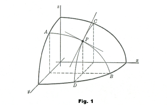

Theorem 1. Clairaut’s theorem.
Suppose a two variable function  is defined on some open set U in ,
and both second-order mixed partial derivatives and exist
and continuous on U, then
is defined on some open set U in ,
and both second-order mixed partial derivatives and exist
and continuous on U, then
Definition 1. The partial derivative of function with respect to x is defined by
Similarly, the partial derivative of f with respect to y is defined by
Note that there are many notations for partial derivative. For example, the following notations are all meaning the same thing
Proposition 1. The geometrical meaning of partial derivatives is the instantaneous rate of change of the multi-variable function f in each directions.
For example means the instantaneous rate of change in x-direction; is the instantaneous rate of change in y-direction.

We can easily define higher order partial derivatives. They are just partial derivative of the previous partial derivatives. The notation should not be confused
And there is a nice result we have to remember.
Theorem 1. Clairaut’s theorem.
Suppose a two variable function is defined on some open set U in ,
and both second-order mixed partial derivatives and exist
and continuous on U, then
Note: This theorem can be generalized to n-variable real-valued functions
 . any second-order mixed derivative has this property. In other
words,
. any second-order mixed derivative has this property. In other
words,